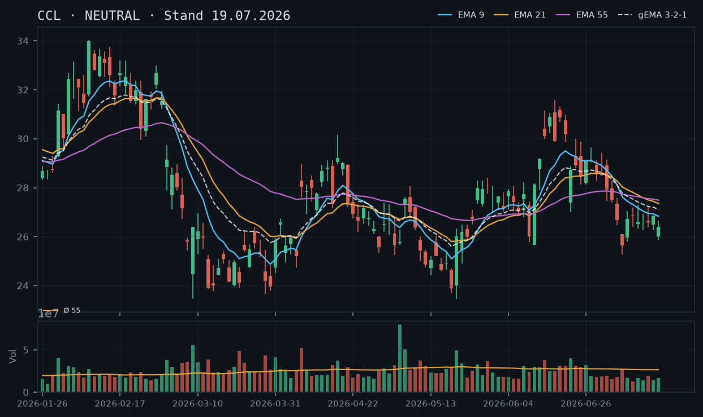
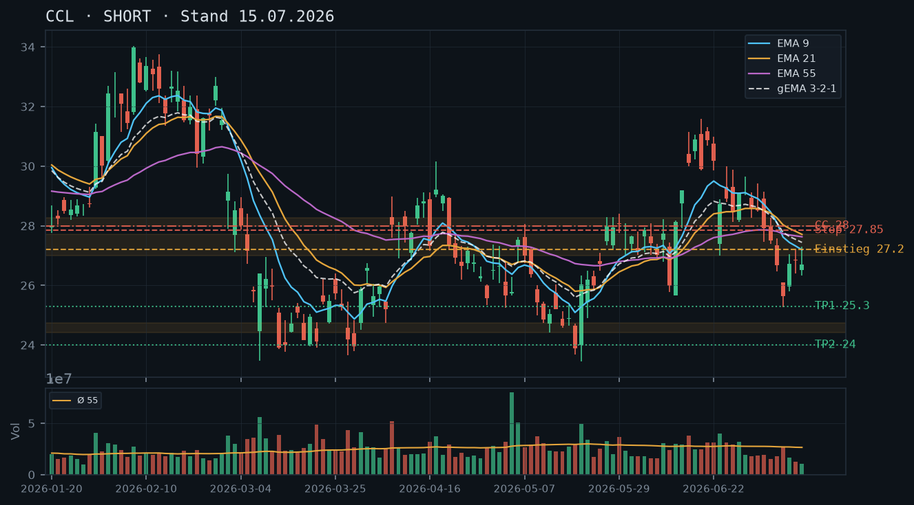
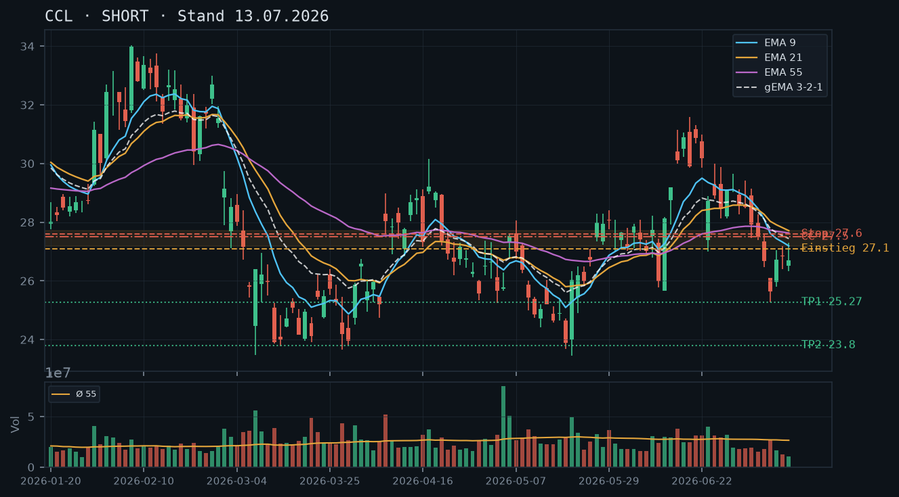
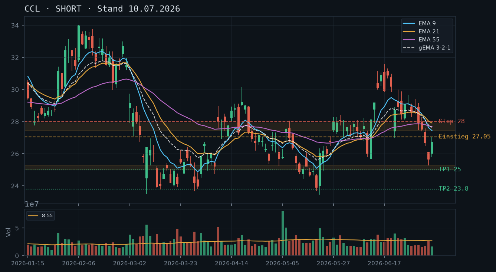
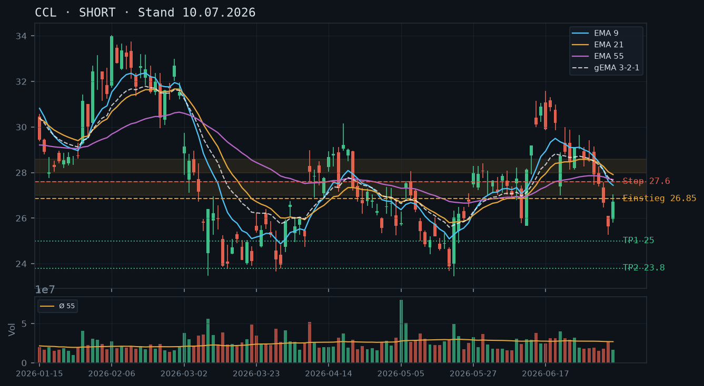
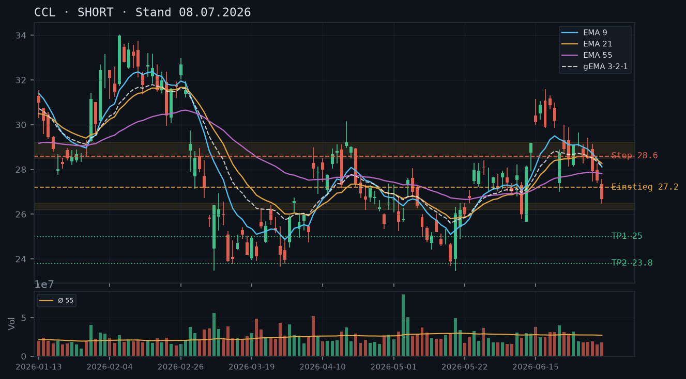

CCL
Analyse-Historie · neueste zuerstCCL bleibt im strukturellen Abwärtstrend unter allen drei EMAs – die Erholung Mitte Juli ist vollständig abverkauft, der Kurs nähert sich dem Juli-Tief bei 25,27 bei weiterhin unterdurchschnittlichem Volumen; Short-Bias bestätigt, kein Stillhalter-Setup ohne Aktienbestand möglich.

1 · Trendstruktur
CCL befindet sich seit dem Hochpunkt 31,60 (17.06.) in einer klaren Abwärtssequenz niedrigerer Hochs und Tiefs: 31,60 → 30,99 → 29,64 → 27,30 → 26,86 → 26,49. Die untere Seite zeigt das relevante Tief vom 08.07. bei 25,27, das bisher einmalig getestet und unbestätigt ist. Das aktuelle Schlussniveau 26,10 (22.07.) liegt nur noch ~3,2% darüber. Die Voranalysen-These des intakten Abwärtstrends wird vollständig bestätigt – die versuchten Erholungen auf 26,86/27,30/27,22 sind allesamt abgelehnt worden, die kurzfristige Gegenbewegung Mitte Juli ist vollständig aufgelöst.
2 · Candlestick-Formationen
Die letzten drei Kerzen (20.–22.07.) zeigen ein kompaktes Konsolidierungsmuster ohne Kaufdruck: 26,04 / 26,16 / 26,10 – drei Inside-Bereiche mit engen Ranges, alle schließen im unteren Drittel der jeweiligen Tagesrange. Die Kerze vom 22.07. öffnete bei 25,98 (Gap leicht nach unten), erreichte 26,49 intraday und fiel zurück auf 26,10 – eine Ablehnung des Intraday-Hochs ohne Folge-Käufer. Kein bullisches Umkehrmuster erkennbar; das Muster spricht für anhaltenden Verkaufsdruck unter Gleichgültigkeit der Käufer.
3 · EMA-Lage (9 / 21 / 55)
Die EMA-Struktur bleibt bärisch geordnet: EMA9 (26,47) < EMA21 (27,04) < EMA55 (27,34), gema_321 bei 26,81. Der Kurs (26,10) liegt unterhalb aller vier Durchschnitte. Gegenüber der Analyse vom 19.07. haben sich alle EMAs weiter nach unten geneigt – EMA9 fiel von 26,67 auf 26,47, EMA21 von 27,23 auf 27,04, was die Abwärtsrotation im EMA-Verbund bestätigt. Der gema_321 (26,81) liegt jetzt als nächster dynamischer Widerstand nur 71 Cents über dem Kurs – ein erster Rücklauf-Filter.
4 · Trade-Setup
| Richtung | Short |
| Einstieg | 26,50 (Limit-Short bei Ablehnung unter gema_321 26,81 / EMA9 26,47-Zone) |
| Stop | 27,15 (über EMA21 27,04 + Puffer) |
| Ziel | 25,27 (Ziel 1, Tief 08.07.) / 24,00 (Ziel 2, Mai-Tief-Cluster) |
| CRV | 1,9 : 1 (Ziel 1) / 3,8 : 1 (Ziel 2) |
5 · Stillhalter (max. 12 Tage)
Kein Aktienbestand laut IBKR-Snapshot (0 Aktien, keine offenen Optionen). Ein Covered Call setzt 100 Aktien je Kontrakt voraus – ohne diese wäre es ein Naked Call mit unbegrenztem Verlustrisiko, für moderate Risikotoleranz nicht geeignet. Ein Cash-Secured Put scheidet aus: Das eigene Short-Kursziel 25,27 liegt nur 3,2% unter dem aktuellen Kurs, jeder technisch sinnvolle CSP-Strike müsste unterhalb dieser Zone liegen (also unter 25,00), was bei einem Puffer von unter 4% und unklarem Support kaum eine akzeptable Prämie liefert. Qualität vor Vollständigkeit – kein Setup.
Bestand: Laut IBKR-Snapshot (11:37 Uhr, 23.07.) keine Aktienposition und keine offenen Optionskontrakte in CCL. Die in den Voranalysen diskutierten CC-Setups (Strike 28,00, Verfall 24.07./25.07.) sind offensichtlich nicht eingegangen worden oder bereits wertlos verfallen – kein Roll-Handlungsbedarf. Für jedes neue Stillhalter-Setup wäre zunächst der Erwerb von mindestens 100 Aktien je geplantem Kontrakt erforderlich.
Ausführliche Analyse vom 23.07.2026 anzeigen
CCL – Technische Analyse 23.07.2026
1. Trendstruktur
Der übergeordnete Abwärtstrend, der in allen drei Voranalysen (13.07., 15.07., 19.07.) beschrieben wurde, ist vollständig intakt und hat an Schubkraft zurückgewonnen. Die Sequenz der relevanten Swing-Hochs lautet: 31,60 (17.06.) → 30,99 (22.06.) → 29,64 (29.06.) → 27,30 (13.07.) → 26,86 (16.07.) → 26,49 (22.07.). Jede Erholung wurde auf niedrigerem Niveau abgelehnt – das ist Lehrbuch-Downtrend.
Auf der Unterseite ist das Schlüssel-Level 25,27 (Tief 08.07.) der einzige identifizierbare strukturelle Support. Wichtig: Dieser Level ist einmalig getestet und damit ein unbestätigter Bereich im Sinne der Analyse-Logik – kein gesicherter Support. Darunter liegen die Mai-Tiefs im Bereich 23,45–23,89 (19.–20.05.) als nächste potenzielle Auffangzone. Die Distanz vom aktuellen Schlusskurs (26,10) zum ersten Tief beträgt lediglich 83 Cents (3,2%) – der Markt steht vor einer Entscheidung.
Die Voranalyse vom 19.07. hatte korrekt eine Verlangsamung des Abwärtsimpulses identifiziert (NEUTRAL-Empfehlung). Diese Verlangsamung erwies sich als technische Pause, keine Umkehr: Der Kurs testete die EMA-Barriere um 26,80–27,00 und wurde ohne Volumen-Überzeugung abgelehnt. Die SHORT-These der Analysen vom 13.07. und 15.07. ist damit nachträglich bestätigt.
2. Candlestick-Formationen
Die letzten fünf Kerzen (17.–22.07.) zeigen ein Bear-Flag / Konsolidierungs-Muster auf niedrigem Niveau:
- 17.07.: 26,01 Open / 26,66 High / 25,86 Low / 26,41 Close – Aufwärtsversuch mit rel_volumen 0,64, Schluss im oberen Drittel, aber kein Follow-through.
- 20.07.: 26,61 Open / 26,77 High / 25,82 Low / 26,04 Close – Shooting-Star-ähnlich, Ablehnung bei 26,77, Schluss im unteren Drittel (rel_volumen 0,67).
- 21.07.: 26,10 / 26,33 / 25,82 / 26,16 – enge Range, neutraler Doji-Charakter (rel_volumen 0,61).
- 22.07.: 25,98 Open (leichtes Gap down) / 26,49 High / 25,74 Low / 26,10 Close – Intraday-Erholung komplett abverkauft, bearishes Engulfing-Muster zur Vortageskerze (rel_volumen 0,61).
Das durchgehend unterdurchschnittliche Volumen (rel_volumen 0,53–0,67) signalisiert: Käufer fehlen, der Markt driftet unter eigenem Gewicht nach unten. Kein bullisches Umkehrmuster (Hammer, Bullish Engulfing, Morning Star) erkennbar.
3. EMA-Analyse
Aktueller Stand der EMAs per 22.07.:
- EMA9: 26,47 (fällt, von 26,93 am 16.07.)
- gema_321: 26,81 (fällt, von 27,20 am 16.07.)
- EMA21: 27,04 (fällt, von 27,44 am 16.07.)
- EMA55: 27,34 (fällt, von 27,53 am 16.07.)
Alle vier Durchschnitte fallen und sind bärisch geordnet (EMA9 < EMA21 < EMA55). Der Kurs (26,10) liegt unterhalb aller EMAs. Die Spreizung zwischen EMA9 (26,47) und EMA55 (27,34) beträgt 87 Cents – moderate Spreizung, kein übermäßiges Oversold-Signal. Der gema_321 (26,81) fungiert als erster dynamischer Widerstand bei einem Rücklauf. Die Voranalyse vom 19.07. hatte EMA21 noch bei 27,23 gesehen – der Rückfall auf 27,04 bestätigt die Abwärtsrotation des gesamten EMA-Verbunds.
4. Trade-Setups – Alternativ-Szenarien
Setup A – Bevorzugtes Short-Setup (Momentum-Continuation):
- Einstieg: 26,50 Limit-Short bei Rücklauf in die gema_321/EMA9-Zone (26,47–26,81)
- Stop: 27,15 (über EMA21 bei 27,04 + 11 Cent Puffer)
- Ziel 1: 25,27 (Tief 08.07.) – CRV: 1,85 : 1
- Ziel 2: 24,00 (Mai-Tief-Cluster 23,45–23,89, gerundetes Ziel) – CRV: 3,8 : 1
- Logik: Rücklauf in den EMA-Widerstand bei geringem Volumen als Short-Einstieg, Trend-Momentum arbeitet für den Trade.
Setup B – Aggressives Breakdown-Setup:
- Einstieg: 25,20 Stop-Sell unter dem unbestätigten Support 25,27 (Tief 08.07.)
- Stop: 26,00 (über aktuellem Schlusskurs als Puffer)
- Ziel 1: 24,00 – CRV: 1,5 : 1
- Ziel 2: 23,45 (Mai-Tief) – CRV: 2,2 : 1
- Logik: Break des einzigen verbliebenen Supports triggert beschleunigtes Selling. Nachteil: Einstieg im freien Fall ohne Struktur – höheres Slippage-Risiko.
Setup C – Long-Rebound (Kontra-Trend, spekulativ):
- Nur valide bei: Bullischer Reversal-Kerze (Hammer/Bullish Engulfing) exakt am 25,27er-Level mit signifikant erhöhtem Volumen (rel_volumen > 1,5)
- Einstieg: 26,00 Stop-Buy über der Reversal-Kerze
- Stop: 24,90
- Ziel: 27,00 (EMA21-Zone) – CRV: 0,9 : 1 → kein attraktives CRV, nur bei sehr starkem Reversal-Signal in Betracht ziehen
5. Stillhalter-Analyse (SCHWERPUNKT)
Der IBKR-Snapshot vom 23.07.2026 (11:37 Uhr) bestätigt: 0 Aktien, keine offenen Optionskontrakte. Dies ist konsistent mit den Voranalysen, in denen bereits auf die fehlende Aktienposition hingewiesen wurde.
Covered Call: Ohne Aktienbestand ist kein CC möglich – der Verkauf eines Calls wäre ein Naked Call mit theoretisch unbegrenztem Verlustpotenzial bei einem Short-Squeeze. Bei moderater Risikotoleranz (definiert in der Persona) ist dies ausgeschlossen. Der in den Analysen vom 13.07. und 15.07. empfohlene CC Strike 28,00 (Verfall 24.07./25.07.) ist offensichtlich wertlos verfallen oder wurde nicht eingegangen – kein Handlungsbedarf.
Cash-Secured Put: Die Hürden für ein sauberes CSP-Setup sind aktuell dreifach:
- Strike-Logik: Ein CSP-Strike müsste technisch unterhalb des nächsten Supports (25,27) liegen, also bei 25,00 oder tiefer. Damit beträgt der Puffer zum Schlusskurs 26,10 nur noch ca. 4,2%. Das ist in Ordnung – aber:
- Andienungsrisiko: Das Short-Kursziel aus Setup B liegt bei 24,00–23,45. Ein CSP Strike 25,00 würde bei Andienung Aktien zu 25,00 liefern – und der Markt könnte noch bis 23,45 laufen. Das ist strukturell inakzeptabel.
- Unbestätigter Support: Das 25,27er-Tief ist einmalig getestet – keine echte Supportzone, sondern ein unbestätigter Bereich. Ein CSP darunter hätte keine solide technische Basis.
Fazit Stillhalter: Kein Setup ist aktuell vertretbar. Sobald sich eines von zwei Szenarien einstellt – (a) Aktienaufbau nach bestätigtem Reversal am 25,27er-Level oder (b) Markt beruhigt sich im Bereich 23,45–24,00 und bildet dort eine echte, mehrfach bestätigte Supportzone – kann die Stillhalter-Strategie neu bewertet werden. Ein CC oberhalb 27,00–27,50 wäre dann mit Aktienbestand wieder das sauberste Instrument.
Roll-Trigger für künftige Positionen: Sollte zu einem späteren Zeitpunkt ein CSP eingegangen werden und der Kurs auf den Strike zulaufen (Delta-Anstieg über 0,40, Kurs innerhalb 3% des Strikes), wäre ein Roll auf den nächsten Freitags-Verfall und Strike 1–2 Stufen tiefer zu prüfen – nur wenn die technische Struktur einen Support auf diesem Niveau rechtfertigt.
CCL zeigt erstmals seit Wochen eine konstruktive Gegenbewegung: Der Kurs hat die EMA-Barriere von unten getestet und hält sich über 26,80 – die Short-These aus den Voranalysen verliert an Schubkraft, doch echte Stärke fehlt bei rel_volumen 0,53–0,64.

1 · Trendstruktur
Die Short-These aus den Analysen vom 10.–15.07. muss heute partiell revidiert werden. CCL hat zwar in der Spitze das Tief vom 08.07. (25,27) am 17.07. mit Low 25,86 noch einmal angetestet, ohne es signifikant zu unterbieten – ein potenziell bullisches Signal im Sinne eines höheren Tiefs (25,86 vs. 25,27). Der Kurs hat sich in den letzten drei Handelstagen (15.–17.07.) zwischen 26,38 und 26,86 stabilisiert und notiert heute laut IBKR-Snapshot bei 26,86. Die Struktur niedrigerer Hochs (31,60 → 27,30 → 26,86) bleibt formal intakt, aber der Abwärtsimpuls hat sich spürbar verlangsamt. Wichtige Levels: Support bei 25,86 (17.07.-Tief) und 25,27 (08.07.-Tief); Widerstand bei 27,18–27,35 (EMA9/gema_321-Zone) und 27,49–27,55 (EMA21/EMA55-Cluster).
2 · Candlestick-Formationen
Die letzten vier Kerzen (14.–17.07.) zeigen ein Konsolidierungsmuster mit engen Körpern und abnehmenden Schwankungsbreiten – kein klares Umkehrmuster, aber auch kein weiterer Verkaufsdruck. Der 17.07. schloss mit einem Doji-ähnlichen Körper (O: 26,01 / C: 26,41, Low 25,86), der das Tief nicht ausbaute. Der 16.07. schloss mit 26,86 bullisch, jedoch bei rel_volumen 0,53 – Fehlausbruchs-Potenzial nach oben ist real. Kein Bestätigungskandle für eine Trendwende vorhanden.
3 · EMA-Lage (9 / 21 / 55)
Die EMA-Konstellation hat sich verändert: EMA9 (26,83) liegt nun unter EMA21 (27,35) und unter EMA55 (27,49), das gema_321 steht bei 27,11. Die Reihenfolge EMA55 > EMA21 > EMA9 ist klassisch bärisch, aber bemerkenswert ist, dass EMA9 sich dem Kurs (26,86) von unten nähert – der Abstand beträgt nur noch ca. 0,03 Punkte. Ein Schlusskurs über EMA9 wäre das erste bullische EMA-Signal seit dem Abwärtstrend-Beginn Mitte Juni. Der gesamte EMA-Verbund (gema_321: 27,11) liegt noch ca. 0,25 über dem aktuellen Kurs und fungiert als nächste Widerstandszone.
4 · Trade-Setup
| Richtung | Kein Trade |
| Einstieg | – |
| Stop | – |
| Ziel | – |
| CRV | – |
5 · Stillhalter (max. 12 Tage)
Die übergeordnete Struktur bleibt bärisch (Kurs unter EMA21/EMA55, Serie niedrigerer Hochs), aber der Abwärtsimpuls hat sich verlangsamt. Ein Cash-Secured Put scheidet weiterhin aus: Das eigene Short-Ziel 25,27/25,86 liegt zu nah an jedem technisch vertretbaren Strike. Der Covered Call bleibt das sauberste Geschäft – allerdings ohne Aktienbestand (IBKR: 0 Aktien) ist dies ein Naked Call mit deutlich anderem Risikoprofil. Ohne Aktienposition ist das CC-Setup nicht empfohlen; ein Naked Call ist für moderate Risikotoleranz ungeeignet.
| Geschäft | Covered Call |
| Strike | 28.0 |
| Puffer | 4.6 % |
| Zone | über EMA21 (27,35) / EMA55 (27,49) / gema_321 (27,11) und dem Cluster der Ablehnungshochs 27,18–27,30 |
| Verfall bis | 2026-07-25 (6 Tage) |
| Begründung | Strike 28,00 hat weiterhin die vollständige EMA-Konfluenz (EMA9: 26,83 / gema_321: 27,11 / EMA21: 27,35 / EMA55: 27,49) als Puffer vor sich. Das Angebots-Cluster vom 06.07. (28,00–28,26) bleibt als zusätzliche Widerstandszone intakt. Puffer zum IBKR-Kurs 26,86: ca. 4,6%. ACHTUNG: Laut IBKR-Snapshot hält diese Position keine Aktien (0 Stück). Ein Covered Call ist daher nicht möglich – der Verkauf des 28er Calls wäre ein Naked Call mit unbegrenztem theoretischen Verlustrisiko. Empfehlung: Setup nur ausführen, wenn zuvor 100 Aktien je Kontrakt erworben werden. In der Optionskette prüfen: Prämie bei 6 DTE und aktuellem IV-Niveau, Spread und Open Interest am 28er Strike für Verfall 25.07. |
Bestand: Laut IBKR-Snapshot (12:10 Uhr) keine Aktienposition und keine offenen Optionskontrakte in CCL. Der zuvor empfohlene Covered Call (Strike 28,00, Verfall 24.07.) wurde demnach nicht eingegangen oder ist bereits verfallen – kein Roll-Handlungsbedarf. Für ein neues CC-Setup wäre zunächst der Aufbau einer Aktienposition erforderlich.
Ausführliche Analyse vom 19.07.2026 anzeigen
CCL – Detailanalyse 19.07.2026
Abgleich mit den historischen Analysen (10.07. / 13.07. / 15.07.)
Die Short-These der letzten drei Analysen basierte auf drei Säulen: (1) Kurs unter allen EMAs, (2) Ablehnung an der 27,00–27,30-Zone auf schwachem Volumen, (3) Kursziele 25,27 / 23,80. Auswertung heute:
- Ziel 1 (25,27) beinahe erreicht: Am 17.07. wurde das Low 25,86 markiert – das Tief vom 08.07. bei 25,27 wurde nicht signifikant unterschritten. Die Short-These hat also partiell performt (Kurs von 26,71 auf 25,86 = −1,27% weiterer Rückgang), aber das primäre Kursziel 25,27 wurde verfehlt. Die Analyse vom 15.07. mit CRV 2,9:1 zu Ziel 25,30 war korrekt in der Richtung, aber der Impuls reichte nicht.
- EMA-Widerstandszone bestätigt: Die 27,00–27,30-Zone hat als Deckel funktioniert – das Hoch der letzten Woche lag bei 27,30 (15.07.). Kein einziger Schlusskurs über EMA21 seit dem 22.06.-Absturz. Diese Zone bleibt der kritische Widerstand.
- CC-Strike 28,00 (Verfall 24.07.): Der Kurs hat die 28er-Marke nie ansatzweise bedroht – ein per 24.07. verkaufter 28er Call dürfte wertlos verfallen sein. Laut IBKR-Snapshot keine offene Option, also entweder nicht eingegangen oder bereits geschlossen.
- Verwerfe: Das Kursziel 23,80 bleibt spekulativ und unrealistisch auf Sicht der nächsten 12 Tage, solange das 25,27er-Tief hält.
1. Trendstruktur – detailliert
Der übergeordnete Abwärtstrend (High 31,60 vom 17.06. → 30,12 → 27,30 → 26,86) ist formal intakt. Jedoch zeichnet sich seit dem 08.07.-Tief (25,27) eine Bodenbildungsstruktur ab:
- Höheres Tief: 17.07. Low 25,86 > 08.07. Low 25,27 – erstes positives Signal.
- Konsolidierungsband: Kurs pendelt seit drei Tagen eng zwischen 25,86 und 26,86 – Richtungsentscheidung steht aus.
- Widerstandscluster: 27,11 (gema_321) → 27,35 (EMA21) → 27,49–27,55 (EMA55/EMA21-Kompression) → 27,18–27,30 (Hochs der Kerzenmuster 09.–15.07.). Diese Zone muss überzeugend gebrochen werden, bevor von einer echten Trendwende gesprochen werden kann.
- Support: 25,86 (17.07.-Low, unbestätigter Support – erst ein Test), darunter 25,27 (08.07.-Tief, zweifach getestet, valider Support), darunter 23,87 (12.03.-Tief).
2. Candlestick-Formationen – detailliert
Der 16.07. (C: 26,86, rel_volumen 0,53) und 15.07. (C: 26,59, rel_volumen 0,73) zeigen Inside-Bar-ähnliche Strukturen – Kontraktion der Volatilität. Das 17.07.-Doji (O: 26,01 / C: 26,41 / L: 25,86 / H: 26,655) bei rel_volumen 0,64 ist ein klassisches Hammer-Pendant: langer Docht nach unten, kleiner Körper – potentiell bullisch, aber ohne Bestätigungskerze wertlos. Das vol-schwache Umfeld (0,47–0,73 in den letzten 7 Tagen) zeigt: Der Markt wartet. Ein Ausbruch mit rel_volumen >1,20 wäre das Qualitätssignal.
3. EMA-Lage – detailliert
Aktuelle Werte (17.07.): EMA9: 26,83 / EMA21: 27,35 / EMA55: 27,49 / gema_321: 27,11. Der EMA9 hat sich dem Kurs (26,86 laut IBKR) bis auf 3 Cent genähert. Interessant: EMA55 (27,49) liegt über EMA21 (27,35) – eine ungewöhnliche Konstellation, die darauf hindeutet, dass der schnellere EMA21 stärker gefallen ist als der langsamere EMA55. Dies ist kein Kompressions-Artefakt im engeren Sinne, sondern spiegelt die Geschwindigkeit des Abwärtstrends wider: EMA21 hat den Kursrückgang bereits stärker eingepreist. Der EMA55 wird folgen, sofern der Kurs tief bleibt. Der gema_321 (27,11) als gewichteter Verbund zeigt die Hauptwiderstands-Schwelle an.
4. Trade-Setups – Alternativen
Setup A – Breakout Long (bevorzugt, falls sich der Markt dreht):
- Einstieg: 27,15 Stop-Buy (Schlusskurs über gema_321 27,11 mit Volumen >1,20)
- Stop: 26,20 (unter 17.07.-Low 25,86 mit Puffer)
- Ziel 1: 27,85 (EMA21-Zone) – CRV: 0,74:1 – zu gering, nur als Scalp
- Ziel 2: 28,90 (Juni-Konsolidierungsbereich) – CRV: 1,84:1 – akzeptabel
- Fazit: Nur bei Volumen-Bestätigung eingehen. Aktuell kein Trade.
Setup B – Short-Fortsetzung (Restwahrscheinlichkeit):
- Einstieg: 27,10 Limit-Short (Ablehnung an gema_321/EMA9-Zone)
- Stop: 27,65 (über EMA21 27,35 + Puffer)
- Ziel: 25,27 (bestätigtes Doppel-Tief)
- CRV: 3,3:1 – rechnerisch attraktiv, aber Konsolidierungs-Muster mahnt zur Zurückhaltung
- Fazit: Erst bei erneutem Scheitern über 27,10 mit schwachem Volumen aktivierbar.
Derzeit kein klar dominantes Setup – daher NEUTRAL und kein aktiver Trade empfohlen.
5. Stillhalter-Analyse (Schwerpunkt)
Positionsstatus (IBKR 12:10 Uhr): Kein Aktienbestand, keine offenen Optionen. Der für 24.07. empfohlene CC 28,00 wurde entweder nicht eröffnet oder ist bereits abgelaufen – kein Roll-Bedarf.
Cash-Secured Put – Begründung für Ablehnung:
Die verbleibenden validen Supports liegen bei 25,86 (einmal getestet, noch unbestätigt als Zone) und 25,27 (zweimal getestet, bestätigt). Ein CSP-Strike müsste technisch sauber unter 25,27 liegen, also bei 25,00 oder darunter. Der Puffer zum aktuellen Kurs (26,86) wäre dann nur ca. 3,2% – zu gering für ein moderates Risikoprofil in einem Titel, der zuletzt mit rel_volumen 2,09 (20.03.) und 1,77 (12.03.) große Tagesschwankungen gezeigt hat. Zudem liegt das Short-Kursziel B (25,27) direkt auf diesem möglichen Strike – klassische Verkettungs-Verletzung. CSP bleibt null.
Covered Call – Strike-Herleitung:
Strike 28,00 bleibt die technisch sauberste Wahl. Die Konfluenz-Kette als Puffer: EMA9 (26,83) → gema_321 (27,11) → EMA21 (27,35) → EMA55 (27,49) → Ablehnungshochs 27,18/27,30 → Angebots-Cluster 28,00–28,26 vom 06.07. Der Puffer beträgt 4,6% zum IBKR-Kurs 26,86. Die Andienung bei 28,00 wäre strukturell akzeptabel: Aktienabgabe auf erhöhtem Niveau im intakten Abwärtstrend, Rückkauf tiefer plausibel.
Kritischer Hinweis – Naked Call:
Ohne Aktienbestand (IBKR: 0 Stück) ist der Verkauf des 28er Calls ein Naked Call – unbegrenztes theoretisches Verlustrisiko bei einem plötzlichen Gap-Up (z.B. M&A-Gerüchte, makroökonomische Überraschung). Bei moderater Risikotoleranz ist dies nicht empfohlen. Der nächste Verfall wäre 25.07.2026 (6 Tage). In der Optionskette zu prüfen: Prämie des 28er Calls bei 6 DTE (bei rel_volumen-Schnitt 0,53–0,73 dürfte die implizite Volatilität gedämpft sein – Prämie könnte gering ausfallen), Bid-Ask-Spread und Open Interest.
Roll-Trigger für zukünftige Positionen:
Sollte ein CC 28,00 eröffnet werden und der Kurs mit Volumen über 27,50 (EMA21) schließen, wäre ein Roll auf CC 29,00 / Verfall 01.08. zu prüfen. Ein Unterschreiten von 25,27 auf Schlusskursbasis würde den Short-Bias reaktivieren und einen CSP weiterhin ausschließen.
CCL bleibt unter allen drei EMAs im intakten Abwärtstrend, der dreitägige Erholungsversuch stirbt bei rel_volumen 0,40 an der 27er-Zone ab – Short-Bias bestätigt, für Stillhalter bleibt der Covered Call das Geschäft, allerdings mit korrigiertem Strike 28,00 statt 27,50.

1 · Trendstruktur
Abwärtstrend seit dem Verlaufshoch 31,60 (17.06.): Serie tieferer Hochs (31,30 am 18.06., 30,00 am 24.06., 29,43 am 01.07., 27,30 am 13.07.) und tieferer Tiefs (27,00 am 23.06., 26,46 am 07.07., 25,27 am 08.07.). Widerstandszone 27,00–27,30 dreifach bestätigt (Hochs 09./10./13.07.), darüber Angebot 28,00–28,26 (06.07.). Das Tief 25,27 ist erst einmal getestet – ein unbestätigter Bereich, kein valider Support. Daten enden am 13.07., die Kerze vom 14.07. fehlt mir.
2 · Candlestick-Formationen
09.–13.07.: drei kleine Erholungskerzen mit austrocknendem Volumen (rel_volumen 0,62 / 0,47 / 0,40) – klassische Bärenflagge. Die 13.07.-Kerze lief intraday bis 27,30 exakt in die Widerstandszone und wurde abgelehnt (oberer Docht, Schluss 26,705). Kein Umkehrsignal, das ist Distribution auf niedrigem Niveau.
3 · EMA-Lage (9 / 21 / 55)
Kurs unter allen drei EMAs. Auffällig die Reihenfolge EMA9 (27,19) < EMA55 (27,63) < EMA21 (27,71) – ein Kompressions-Artefakt aus dem schnellen Abverkauf seit Ende Juni, kein eigenständiges Signal; die EMA9 hat die EMA55 bereits bärisch gekreuzt (ca. 08.07.), die EMA21 folgt. Der gema_321 fällt seit 07.07. kontinuierlich (28,11 auf 27,44) und deckelt zusammen mit EMA9/21 die Zone 27,2–27,7.
4 · Trade-Setup
| Richtung | Short |
| Einstieg | 27,20 (Limit-Short bei Ablehnung in der EMA-/Widerstandszone 27,00–27,71) |
| Stop | 27,85 (über EMA21 bei 27,71 und der Ablehnungszone) |
| Ziel | 25,30 (über Tief 08.07. bei 25,27) / 24,00 (Mai-Tief-Cluster) |
| CRV | 2,9 : 1 (Ziel 1) / 4,9 : 1 (Ziel 2) |
5 · Stillhalter (max. 12 Tage)
Im bestätigten Abwärtstrend unter allen EMAs bleibt der Covered Call das einzige saubere Geschäft – aber mit Strike 28,00 statt der zuvor genannten 27,50, denn 27,50 liegt IN der EMA-Widerstandszone (EMA21: 27,71) statt dahinter. Ein CSP scheidet weiter aus: Das 25,27er-Tief ist nur einfach getestet, und die eigenen Short-Ziele (25,30/24,00) würden jeden Strike über 23 direkt in die Andienung laufen lassen.
| Geschäft | Covered Call |
| Strike | 28.0 |
| Puffer | 4.8 % |
| Zone | über der dreifach bestätigten Ablehnungszone 27,00–27,30 und der EMA-Barriere 27,19–27,71 (EMA9/gema_321/EMA21) |
| Verfall bis | 2026-07-24 (9 Tage) |
| Begründung | Der Strike hat die komplette Widerstands-Konfluenz als Puffer VOR sich: Ablehnungshochs 27,04/27,18/27,30 plus EMA9 (27,19), gema_321 (27,44) und EMA21 (27,71). Direkt AM Strike liegt zusätzlich das Angebot 28,00–28,26 vom 06.07. Andienung bei 28,00 wäre strukturell einwandfrei – Abgabe nahe dem Zonen-Cluster im Abwärtstrend, Rückkauf tiefer plausibel. In der Optionskette prüfen: Prämie im Verhältnis zum 4,8%-Puffer (bei rel_volumen 0,40 dürfte die IV niedrig sein – ist die Prämie den Deckel wert?), Spread und Open Interest am 28er. |
Ausführliche Analyse vom 15.07.2026 anzeigen
Analyse: CCL (Stand letzte Kerze 13.07.2026, Schluss 26,705)
Datenhinweis: Heute ist der 15.07., die Daten enden am 13.07. – die Kerze vom 14.07. fehlt. Prüfe vor Ordererteilung, ob der Kurs die Zone 27,00–27,30 zwischenzeitlich zurückerobert oder das Tief 26,34 (13.07.) unterschritten hat.
1. Trendstruktur
Der Abwärtstrend seit dem 31,60er-Hoch vom 17.06. ist lehrbuchmäßig: tiefere Hochs bei 31,30 (18.06.), 30,00 (24.06.), 29,64 (29.06.), 29,43 (01.07.), 27,30 (13.07.) und tiefere Tiefs bei 27,00 (23.06.), 26,46 (07.07.), 25,27 (08.07.). Der Bruch der Juni-Konsolidierung 28,13–29,20 am 07./08.07. hat aus der alten Unterstützung Widerstand gemacht. Relevante Zonen: Widerstand 27,00–27,30 (dreifach bestätigt: Hochs 27,04 am 09.07., 27,18 am 10.07., 27,30 am 13.07.), darüber die Angebotszone 28,00–28,26 (Hoch 06.07., zuvor Unterstützungsbereich Ende Juni). Unten: Das Tief 25,27 vom 08.07. ist ein unbestätigter Bereich (Einzeltest). Erst darunter liegt echte, mehrfach bestätigte Struktur: das Mai-Cluster 24,41–24,75 (Tiefs 12./13./15./18.05.) und tiefer 23,45–23,90 (Tiefs 19./20.05. sowie 12./13.03.).
2. Candlesticks
Die Erholung 09.–13.07. ist qualitativ schwach: drei kleine Körper, Volumen austrocknend von rel_volumen 0,62 (09.07.) über 0,47 (10.07.) auf 0,40 am 13.07. – das niedrigste Volumen der gesamten Datenreihe. Die 13.07.-Kerze testete mit 27,30 exakt die Zonenoberkante und schloss abgelehnt bei 26,705 (oberer Docht). Der Abverkauf 08.07. lief dagegen mit rel_volumen 1,02 – Verkäufer arbeiten mit Volumen, Käufer ohne. Das ist das Muster einer Bärenflagge, nicht einer Bodenbildung.
3. EMA-Lage
Kurs (26,705) unter allen drei EMAs. Die Reihenfolge EMA9 (27,19) < EMA55 (27,63) < EMA21 (27,71) ist ein Kompressions-Artefakt: Der schnelle Absturz von 30+ auf 25,27 hat die schnelle EMA9 unter die träge EMA55 gedrückt, bevor die EMA21 folgen konnte. Kein eigenständiges Signal, aber es zeigt die Wucht der Bewegung. Der gema_321 fällt seit 07.07. stetig (28,35 → 27,44) und bildet mit EMA9 und EMA21 eine kompakte Widerstands-Konfluenz 27,19–27,71 – exakt dort, wo die letzten drei Tageshochs abgelehnt wurden.
4. Trade-Setups
Setup A (bevorzugt): Limit-Short 27,20 in der Konfluenzzone, Stop 27,85 (über EMA21), Ziel 1: 25,30 (knapp über dem 08.07.-Tief – vor einem Einzeltest-Level nehme ich Gewinne, ich verlasse mich nicht auf seinen Bruch), Ziel 2: 24,00 (vor dem Mai-Cluster). CRV 2,9:1 / 4,9:1.
Setup B (Momentum): Stop-Sell 26,30 unter dem 13.07.-Tief (26,34), Stop 27,40 (über Tageshoch 13.07.), Ziele wie A. CRV 0,9:1 / 2,1:1 – deutlich schlechter, nur bei Volumenbestätigung (rel_volumen > 1,2) am Ausbruchstag.
Setup C (kontra, nur für Aggressive): Rückeroberung über 27,75 per Tagesschluss würde die EMA-Barriere neutralisieren – Long-Scalp Richtung 28,20/29,00 denkbar, aber gegen den Trend und hier nicht empfohlen.
5. Stillhalter-Szenario (Schwerpunkt)
Korrektur zur Voranalyse vom 13.07.: Der dort genannte CC-Strike 27,50 verstößt gegen die eigene Regel – er liegt INNERHALB der EMA-Widerstandszone (EMA21: 27,71 darüber), nicht dahinter. Außerdem war der Verfall "25.07." ein Samstag; der Standardverfall ist Freitag, 24.07.2026 (9 Tage). Beides hiermit bereinigt.
Covered Call 28,00, Verfall spätestens 24.07.: Der Strike hat die volle Konfluenz als Puffer vor sich: die dreifach bestätigte Ablehnungszone 27,00–27,30, EMA9 (27,19), gema_321 (27,44), EMA21 (27,71) – und direkt am Strike sitzt zusätzlich das 28,00–28,26er-Angebot vom 06.07. Der Kurs müsste durch vier Barrieren, um anzudienen. Puffer: 4,8% zum Schluss 26,705. Andienungsszenario: Abgabe bei 28,00 wäre sauber – Verkauf am oberen Rand der Bärenflagge, im Trendkontext eher ein Geschenk. Roll-Trigger: (1) Tagesschluss über 27,75 (EMA21 zurückerobert) – Call hochrollen auf 29,00 (über das 01.07.-Hoch 29,43 passt nicht, also 29,50) oder in die nächste Serie; (2) Schluss über 28,30 – Struktur gedreht, Deckel weg, glattstellen. In der Kette prüfen: Prämie am 28er im Verhältnis zum Puffer – bei rel_volumen 0,40 und enger Range dürfte die IV komprimiert sein; ist die Prämie zu dünn, ist Nichtstun besser als ein Deckel für Cents. Alternativ den 17.07.-Verfall (2 Tage) prüfen, falls dort relativ mehr Zeitwertabbau pro Tag bezahlt wird.
Warum weiterhin kein CSP: Verkettungs-Prüfung: Meine Short-Ziele lauten 25,30 und 24,00. Ein Put-Strike bei 25 oder 24 läge exakt auf dem eigenen Kursziel – logisch inkonsistent. Erst ein Strike 23,00 unter der bestätigten Zone 23,45–23,90 wäre strukturell sauber (Puffer 13,9%), dürfte aber auf 9 Tage kaum Prämie abwerfen. Qualität vor Vollständigkeit: kein CSP.
6. Abgleich mit den Voranalysen
Die Short-These vom 10.07. (beide Analysen) und 13.07. wird vollständig bestätigt: Die Erholung lief exakt in die definierte Zone 26,75–27,30 und wurde bei fallendem Volumen abgelehnt. Die Volumen-Warnung der 13.07.-Analyse (rel. 0,40) bleibt gültig – der Trend ist intakt, aber müde; enge Stops, keine Positionsgröße erzwingen. Der CC-Fokus wird bestätigt, der Strike wie oben begründet von 27,50 auf 28,00 angehoben.
CCL bestätigt weiterhin den Abwärtstrend unter allen drei EMAs – der heutige Erholungsversuch auf 27,30 wurde abgelehnt, der Short-Bias bleibt intakt, aber das extrem niedrige Volumen (rel. 0,40) mahnt zur Vorsicht bei Neuengagements.

1 · Trendstruktur
Der übergeordnete Abwärtstrend seit dem Hoch bei 31,60 (17.06.) ist strukturell intakt: sinkende Hochs (31,60 → 31,05 → 29,89 → 27,57 → 27,30 heute) und sinkende Tiefs (29,86 → 28,13 → 26,46 → 25,27 → 26,34 heute). Der Kurs handelt bei 26,70 weiterhin unter EMA9 (27,19), EMA21 (27,71) und EMA55 (27,63) – alle EMAs fallen, kein bullisches Signal. Die zuvor definierten Short-Einstiegszonen 26,75–27,10 aus den Voranalysen blieben aktiv; das heutige Tageshoch von 27,30 testete die untere EMA-Widerstandszone und wurde abgewiesen.
2 · Candlestick-Formationen
Die heutige Kerze (13.07.) zeigt einen langen oberen Docht (Open 26,50 → High 27,30 → Close 26,71): klassischer Shooting-Star-Charakter, der die Ablehnung an der EMA-Zone bestätigt. Das Volumen ist mit rel. 0,40 extrem dünn – das niedrigste der gesamten 90-Kerzen-Periode – was sowohl die Kaufseite als auch die Verkaufsseite schwächt und die Aussagekraft der Formation einschränkt. Die letzten drei Kerzen (09.–13.07.) bilden einen kleinen Erholungsversuch auf sehr schwachem Volumen, was typischerweise für eine Korrektur im Abwärtstrend spricht.
3 · EMA-Lage (9 / 21 / 55)
EMA9 (27,19) < EMA21 (27,71) < EMA55 (27,63) – alle drei fallen, wobei EMA21 über EMA55 liegt, was auf einen noch nicht vollständig etablierten Abwärtstrend hinweist. Der gema_321 (27,44) liegt klar über dem Kurs (26,71) und fällt ebenfalls, was den bearishen Verbund bestätigt. Der Abstand Kurs zu gema_321 beträgt ca. 0,73 (2,7%) – moderat, kein extremes Überverkauft-Signal. Die kurzzeitige Erholung der letzten Tage (26,68→26,83→26,70) hat die EMAs nicht zurückerobert.
4 · Trade-Setup
| Richtung | Short |
| Einstieg | 27,10 (Limit-Short bei Ablehnung unter EMA9/gema_321-Zone) |
| Stop | 27,60 (über EMA21 und heutigem Tageshoch 27,30 + Puffer) |
| Ziel | 25,27 (Ziel 1, Tief vom 08.07.) / 23,80 (Ziel 2) |
| CRV | 2.6 : 1 (zu Ziel 1: 25,27) |
5 · Stillhalter (max. 12 Tage)
Im intakten Abwärtstrend mit Kurs unter allen EMAs ist ein Covered Call die sinnvollste Stillhalter-Strategie. Ein Cash-Secured Put scheidet aus, da kein tragfähiger Support über 25,00 identifizierbar ist und das Andienungsrisiko bei Fortsetzung des Abwärtstrends zu hoch wäre. Der CC oberhalb des EMA-Widerstands bietet einen technisch gut begründeten Strike.
| Geschäft | Covered Call |
| Strike | 27.5 |
| Puffer | 3.0 % |
| Zone | EMA9/gema_321-Widerstandszone 27,19–27,71; Tageshoch heute 27,30 |
| Verfall bis | 2026-07-25 (12 Tage) |
| Begründung | Strike 27,50 liegt oberhalb des heutigen Tageshochs (27,30) und innerhalb der EMA-Widerstandszone (EMA9: 27,19 / EMA21: 27,71). Der Puffer beträgt ca. 3,0% zum aktuellen Schlusskurs 26,71. Eine Andienung (Aktienabgabe bei 27,50) wäre strukturell akzeptabel – der Kurs würde damit auf erhöhtem Niveau abgegeben, und ein Rückkauf tiefer im Trend ist plausibel. Prüfen: Ist die Prämie bei diesem engen Strike ausreichend (mind. 0,20–0,30 angesichts niedrigem IV-Umfeld)? Bei Strike 28,00 wäre der Puffer mit 4,8% größer und läge über EMA21 (27,71) – sichererer Strike für konservative Anleger, die Prämie aber geringer prüfen. |
Ausführliche Analyse vom 13.07.2026 anzeigen
CCL – Detailanalyse 13.07.2026
1. Trendstruktur
CCL befindet sich in einem klar definierten Abwärtstrend seit dem Mehrwochenhoch bei 31,60 (17.06.2026). Die Trendstruktur zeigt konsequent sinkende Swing-Hochs und sinkende Swing-Tiefs:
- Hochs: 31,60 (17.06.) → 31,05 (16.06.) → 30,99 (22.06.) → 29,64 (29.06.) → 29,15 (02.07.) → 28,26 (06.07.) → 27,57 (07.07.) → 27,30 heute (13.07.)
- Tiefs: 29,86 (17.06.) → 27,00 (23.06.) → 26,46 (07.07.) → 25,27 (08.07.) → 25,81 (09.07.) → 26,34 heute
Das Tief vom 08.07. bei 25,27 ist die wichtigste kurzfristige Unterstützung. Darunter liegt der nächste relevante Support erst bei ca. 24,40–24,60 (Cluster vom März/April 2026) und dann bei 23,80–23,92 (Tiefs März 2026). Der übergeordnete Widerstand liegt bei der EMA-Cluster-Zone 27,19–27,71, gefolgt von 28,00–28,50 (vorherige Konsolidierungszone Ende Juni). Die Voranalysen vom 08./10.07. mit Short-Bias werden vollständig bestätigt – der Kurs hat sich seitwärts-schwach entwickelt und die EMA-Zone nicht zurückerobert.
2. Candlestick-Formationen
Die letzten fünf Kerzen zeigen folgendes Bild: Nach dem starken Abverkauf am 08.07. (Close 25,64, rel. Volumen 1,02) kam es zu einer dreitägigen Erholung auf sehr niedrigem Volumen (09.07.: 0,62 / 10.07.: 0,47 / 13.07.: 0,40). Die heutige Kerze vom 13.07. ist besonders aussagekräftig: Open 26,50, High 27,30, Close 26,71 – ein Shooting Star / Bearish Spinning Top mit langem Oberschatten, der die Ablehnung an der EMA-Zone dokumentiert. Das Tageshoch 27,30 überschritt kurzzeitig EMA9 (27,19), schloss aber klar darunter. Das extrem niedrige Volumen (rel. 0,40 – absolut niedrigstes der gesamten 90-Kerzen-Reihe) ist zweischneidig: Es schwächt die Überzeugungskraft der bärischen Kerze, zeigt aber auch, dass kein echter Kaufdruck vorhanden ist. Die Erholung der letzten drei Tage hat Merkmale eines Flags/Bear-Pennants auf fallendem Volumen.
3. EMA-Analyse
Die EMA-Konstellation ist eindeutig bärisch: Kurs (26,71) unter EMA9 (27,19) unter gema_321 (27,44). EMA21 (27,71) liegt über EMA55 (27,63), was noch keine vollständige bearishe EMA-Sortierung (9<21<55) darstellt, aber alle EMAs fallen seit dem 17.06.-Hoch. Der gema_321 als gewichteter Verbund fällt von 28,82 (22.06.) kontinuierlich auf aktuell 27,44 – ein Rückgang von 4,8% in knapp drei Wochen.
Der Abstand Kurs zu EMA9 beträgt +0,48 (der Kurs ist 0,48 unter EMA9), zu EMA21 +1,01, zu gema_321 +0,73. Diese Abstände sind moderat – kein extremes Überverkauft-Signal, das eine Gegenbewegung erzwingt. Die Zone 27,19–27,71 (EMA9 bis EMA21) bildet den zentralen Widerstandsbereich für Short-Einstiege. Die Voranalysen hatten EMA-Widerstand bei 27,00–27,10 (EMA9 damals höher) benannt – dieser ist nach unten gewandert, was die fallende EMA-Dynamik unterstreicht.
4. Trade-Setups
Setup A (bevorzugt) – Limit-Short bei EMA-Ablehnung:
- Einstieg: 27,10 (Limit-Short, Ablehnung unter EMA9-Zone)
- Stop: 27,60 (über EMA21 und Tageshoch 27,30 + Puffer)
- Ziel 1: 25,27 (Tief 08.07.) – CRV: (27,10-25,27)/(27,60-27,10) = 1,83/0,50 = 3,7:1
- Ziel 2: 23,80 – CRV: (27,10-23,80)/0,50 = 6,6:1
Setup B – Aggressiver Market-Short sofort:
- Einstieg: 26,71 (aktueller Close / Market-Short)
- Stop: 27,60
- Ziel 1: 25,27 – CRV: 1,44/0,89 = 1,6:1
- Ziel 2: 23,80 – CRV: 2,91/0,89 = 3,3:1
Setup C – Breakdown-Short unter 25,27:
- Einstieg: 25,20 (Stop-Sell unter dem Vorjahrestief)
- Stop: 26,00
- Ziel: 23,80 – CRV: 1,40/0,80 = 1,75:1
Setup A bietet das beste CRV und ist mit der technischen EMA-Lage am besten vereinbar. Das niedrige Volumen der letzten Tage erhöht jedoch das Risiko eines Fehlsignals; ein Volumenanstieg bei der Ablehnung (>0,80 rel. Volumen) würde Setup A erheblich stärken.
5. Stillhalter-Setups (Schwerpunkt)
Grundeinschätzung: Im intakten Abwärtstrend mit Kurs unter allen drei EMAs und ohne tragfähigen kurzfristigen Support über 25,00 USD scheidet ein Cash-Secured Put aus – das Andienungsrisiko bei Fortsetzung des Abwärtstrends ist zu hoch, und es gibt keine technische Zone, die einen CSP-Strike mit ausreichendem Puffer und akzeptablem Andienungsszenario rechtfertigt. Ein CSP unter 25,00 läge zu nahe am Tief vom 08.07. (25,27) und hätte bei einem erneuten Breakdown kein Fangnetz. Daher: kein CSP empfohlen.
Covered Call – Strike 27,50, Verfall 25.07.2026:
- Zonen-Herleitung: EMA9 fällt bei 27,19, gema_321 bei 27,44, EMA21 bei 27,71. Das heutige Tageshoch von 27,30 markiert den unmittelbaren Intraday-Widerstand. Strike 27,50 liegt mitten in dieser EMA-Zone und hat das Tageshoch als Puffer vor sich.
- Puffer: 27,50 / 26,71 – 1 = 2,96% ≈ 3,0% zum Schlusskurs.
- Andienungsszenario: Eine Andienung bei 27,50 wäre technisch akzeptabel – der Kurs würde über dem aktuellen Niveau abgegeben, was in einem Abwärtstrend als günstige Ausstiegsebene gilt. Ein Rückkauf der Position tiefer im Trend wäre plausibel. Andienungsrisiko: Überraschende positive Katalysatoren (z.B. Earnings-Überraschung, sektoraler Newsflow) könnten die EMA-Zone durchbrechen.
- Konservative Alternative – Strike 28,00: Puffer 4,8%, läge über EMA21 (27,71) und der jüngsten Konsolidierungszone. Geringere Prämie, aber deutlich mehr Sicherheitspuffer. Empfehlenswert, falls die IV niedrig ist und der 27,50er-Strike keine ausreichende Prämie liefert.
- Was in der Optionskette prüfen: (1) Prämie des 27,50er CC: Mindestens 0,20–0,30 sollten erzielbar sein, um das Transaktionskostenrisiko zu rechtfertigen. (2) Bid-Ask-Spread (CCL hat gute Liquidität, aber kurzlaufende OTM-Calls können eng sein). (3) Implizite Volatilität: Bei aktuell sehr niedrigem realem Volumen (rel. 0,40) könnte die IV komprimiert sein – dann ggf. Strike näher am Geld wählen. (4) Open Interest für den 25.07.-Verfall prüfen.
- Rollen-Trigger: Falls der Kurs über 27,60 (EMA21 + Puffer) steigt und die EMA-Zone zurückerobert, ist ein Rollen des Calls auf einen höheren Strike oder eine Laufzeitverlängerung zu prüfen.
CCL bestätigt die Short-These der Vortage: Der beschleunigte Abwärtstrend bleibt intakt, der Kurs handelt weiterhin unter allen drei EMAs, und die Erholung vom 09.07. lief exakt in die zuvor definierte Einstiegszone 26,75–27,00 – auf auffällig schwachem Volumen, was für eine Fortsetzung der Short-Bewegung spricht.

1 · Trendstruktur
CCL befindet sich seit dem Zwischenhoch am 17.06. (31,595) in einem beschleunigten Abwärtstrend mit einer klaren Serie tieferer Hochs (31,60 → 31,30 → 30,99 → 29,64 → 29,43 → 28,26 → 26,11) und tieferer Tiefs. Der Rückgang hat sich seit dem 02.07. spürbar verschärft: Von 27,46 fiel der Kurs binnen vier Handelstagen auf ein neues Tief bei 25,27 (08.07.) – ein Rückgang von rund 20% seit dem Junihoch. Der übergeordnete Trend bleibt eindeutig bärisch.
2 · Candlestick-Formationen
Die Kerze vom 08.07. (Tief 25,27, Schluss 25,64) markierte ein neues Verlaufstief nahe der zuvor definierten ersten Zielzone (25,00). Am 09.07. folgte eine kräftige grüne Kerze (Eröffnung 25,97, Hoch 27,04, Schluss 26,72), die den Körper der Vortageskerze vollständig umschließt – ein klassisches Bullish Engulfing. Entscheidend: Das Volumen dieser Erholung lag mit rel_volumen 0,62 deutlich unter dem Durchschnitt, während der vorangegangene Ausverkauf auf durchschnittlichem bis leicht erhöhtem Volumen lief (rel_volumen 1,02 am 08.07.) – die Rally wirkt damit eher wie eine technische Gegenbewegung/Short-Covering als wie ein tragfähiges Umkehrsignal.
3 · EMA-Lage (9 / 21 / 55)
Die EMA-Struktur ist bärisch, aber mit interessanter Nuance: EMA21 (27,91) > EMA55 (27,69) > EMA9 (27,44), das heißt die kurzfristige EMA9 ist mittlerweile unter die EMA55 gefallen – ein zusätzliches bärisches Signal gegenüber den Vortagen. Der Schlusskurs (26,72) notiert unter allen drei EMAs und rund 2,6% unter der EMA9. Der gewichtete Verbund gema_321 fällt seit dem 30.06. (28,67) kontinuierlich bis auf 27,64 (09.07.) – keine Verlangsamung, keine Divergenz, die Abwärtsdynamik bleibt technisch bestätigt.
4 · Trade-Setup
| Richtung | Short |
| Einstieg | 27,00–27,10 (Limit-Short bei Ablehnung an EMA9/vorheriger Unterstützungszone, die am 09.07. bereits mit Hoch 27,04 getestet wurde) |
| Stop | 28,00 (über EMA21 bei 27,91 und dem Junihoch-Cluster) |
| Ziel | 25,00 (Ziel 1, nahe bereits erreichtem Tief) / 23,80 (Ziel 2) |
| CRV | 2,0 : 1 (Ziel 1) / 3,2 : 1 (Ziel 2) |
Ausführliche Analyse vom 10.07.2026 anzeigen
CCL – Technische Analyse (Datenstand 09.07.2026)
Hinweis: Die gelieferte Zeitreihe endet am 09.07.2026, einen Handelstag vor dem heutigen Datum (10.07.2026). Die Analyse beruht ausschließlich auf diesem Datenstand.
1. Trendstruktur
Seit dem Zwischenhoch bei 31,595 am 17.06. befindet sich CCL in einem klar definierten und sich zuletzt beschleunigenden Abwärtstrend. Die Struktur zeigt eine lückenlose Serie tieferer Hochs: 31,595 (17.06.) → 31,30 (18.06.) → 30,99 (22.06.) → 30,00 (24.06.) → 29,64 (29.06.) → 29,43 (01.07.) → 28,26 (06.07.). Besonders auffällig ist die Beschleunigung ab dem 02.07.: Von einem Hoch bei 29,15 fiel der Kurs binnen vier Sitzungen auf ein neues Verlaufstief bei 25,27 (08.07.), begleitet von durchgehend fallenden Tageshochs. Diese Abwärtsdynamik bestätigt die Short-Einschätzungen der Analysen vom 08.07. und 10.07. vollumfänglich – beide Kernthesen (beschleunigter Abwärtstrend, Kurs unter fallenden EMAs) sind durch die neuen Daten nicht nur bestätigt, sondern durch das neue Tief bei 25,27 sogar verstärkt worden.
2. Candlestick-Formationen
Die Kerze vom 08.07. (Eröffnung 26,10, Tief 25,27, Schluss 25,64, rel_volumen 1,02) markierte das bisherige Verlaufstief nahe der ersten Zielzone der Vor-Analysen (25,00) – der Kurs kam damit bereits auf rund 1% an das erste Kursziel heran, ohne es sauber zu unterschreiten. Am 09.07. folgte eine deutlich bullische Kerze: Eröffnung 25,97, Hoch 27,04, Tief 25,81, Schluss 26,72 – ein klassisches Bullish Engulfing gegenüber der Vortageskerze. Entscheidend für die Einordnung ist das Volumen: Mit rel_volumen 0,62 lag der Umsatz dieser Erholung deutlich unter dem 55-Perioden-Schnitt, während der vorausgegangene Ausverkauf auf durchschnittlichem Volumen erfolgte. Eine Erholung ohne überdurchschnittliches Kaufvolumen direkt nach einem beschleunigten Abverkauf ist typisch für eine technische Gegenbewegung bzw. Short-Covering-Rally und kein belastbares Trendwendesignal. Bemerkenswert: Das Tageshoch vom 09.07. (27,04) liegt exakt in der von den Vor-Analysen definierten Einstiegszone (26,75–27,00) – die Zone wurde damit bereits angelaufen und leicht überschritten, bevor der Kurs wieder auf 26,72 zurückfiel.
3. EMA-Lage
Die EMA-Struktur bleibt bärisch, hat sich gegenüber den Vortagen aber weiter verschlechtert: Aktuell gilt EMA21 (27,91) > EMA55 (27,69) > EMA9 (27,44) > Kurs (26,72). Das bedeutet, die kurzfristige EMA9 ist mittlerweile auch unter die langsamere EMA55 gefallen – ein zusätzliches bärisches Signal gegenüber der Analyse vom 08.07., als die EMA9 noch über der EMA55 lag. Der Kurs notiert rund 2,6% unter der EMA9 und rund 3,5% unter dem gewichteten Verbund gema_321 (27,64). Dieser Verbund fällt seit dem 30.06. (28,67) an jedem einzelnen Handelstag weiter (01.07.: 28,62; 02.07.: 28,50; 06.07.: 28,35; 07.07.: 28,11; 08.07.: 27,78; 09.07.: 27,64) – eine bemerkenswert gleichmäßige, ununterbrochene Abwärtsbewegung ohne jede Divergenz zum fallenden Kurs. Das ist ein starkes technisches Bestätigungssignal für die Short-Richtung.
4. Trade-Setups und Bezug zu den Vor-Analysen
Die Analyse vom 08.07. definierte Einstieg 27,20 / Stop 28,60 / Ziel 25,00–23,80 (CRV 2,3:1), die Analyse vom 10.07. präzisierte auf Einstieg 26,75–27,00 / Stop 27,60 / Ziel 25,00–23,80 (CRV 2,6:1). Beide Setups werden durch die Daten bestätigt: Der Kurs erreichte das erste Ziel nahezu (Tief 25,27 vs. Ziel 25,00) und lief anschließend exakt in die definierte Einstiegszone zurück (Hoch 27,04 vs. Zone 26,75–27,00), bevor er wieder abverkauft wurde. Das ist ein Lehrbuch-Pullback in eine ehemalige Unterstützung, die jetzt als Widerstand fungiert.
- Setup A – Pullback-Short (bevorzugt): Einstieg 27,00–27,10 (Limit bei erneuter Ablehnung an EMA9/vorheriger Unterstützungszone), Stop 28,00 (über EMA21 bei 27,91 und dem Kerzencluster von Ende Juni), Ziel 1: 25,00 (CRV 2,0:1), Ziel 2: 23,80 (CRV 3,2:1). Nutzt die bereits laufende technische Gegenbewegung als besseren Einstiegspreis als am aktuellen Kurs.
- Setup B – Direkteinstieg bei erneutem Bruch: Bei Tagesschluss unter dem Tief vom 08.07. (25,27) Einstieg ca. 25,10, Stop 26,00 (über dem lokalen Pivot vom 09.07.), Ziel 1: 23,80 (CRV ca. 1,3:1), Ziel 2: 22,00 (rundes Ziel unterhalb bisheriger Struktur, CRV ca. 3,4:1). Vorteil: bestätigt bereits laufende Trendfortsetzung, Nachteil: engeres CRV zum ersten Ziel.
- Setup C – Ausstiegsszenario / Setup verwerfen: Ein Tagesschluss über der EMA21 (27,91) mit überdurchschnittlichem Volumen (rel_volumen > 1,3) würde die Short-These ernsthaft infrage stellen und auf eine echte Bodenbildung statt einer reinen Gegenbewegung hindeuten – in diesem Fall offene Short-Positionen absichern bzw. schließen.
Konfluenz-Bereich: Die Zone 27,60–27,91 vereint aktuell EMA9, EMA55 und EMA21 sowie den Stop-Bereich der Vor-Analysen – ein kompakter Widerstandscluster, der die Obergrenze für Setup A definiert. Nach unten liefert der Datensatz zwischen 23,80 (Ziel 2) und dem März-Tief (23,47 am 09.03.) kaum weitere Struktur – ein Bruch unter 23,80 würde relativ zügig in Richtung der März-Tiefs führen.
Diese Analyse ist eine rein technische Einordnung auf Basis der übermittelten Kursdaten, keine Anlageberatung.
CCL bestätigt den Short-Trend der Voranalyse: Nach dem Scheitern an $31 befindet sich die Aktie im kontrollierten Abwärtstrend mit fallenden EMAs, der Kurs handelt unter allen drei EMAs, und der gestrige Pullback bietet eine weitere Short-Gelegenheit.

1 · Trendstruktur
CCL hat die $31-Widerstandszone (Hoch 31.595 am 17.06.) klar abgewiesen und seither eine Folge fallender Hochs und Tiefs gebildet: 31.595 → 30.99 → 29.639 → 28.26 → 27.57 → 26.11. Der Kurs notiert aktuell bei 26.72 und hat zuletzt das Swing-Low vom 08.07. bei 25.27 angelaufen. Die Unterstützungszone 25.00–25.50 (Tiefs März/April) ist das nächste kritische Level.
2 · Candlestick-Formationen
Am 08.07. fiel CCL mit einer bearishen Kerze (Open 26.10, Close 25.64) auf das Tief 25.27 bei leicht überdurchschnittlichem Volumen (rel. 1.02). Die gestrige Kerze (09.07.) ist ein Pullback-Anstieg (Open 25.97, Close 26.72, Hoch 27.04) – ein typischer Bear-Pullback auf dem Weg nach unten, der in den Widerstandsbereich 26.70–27.00 (ehem. Support, nun Resistance) reicht.
3 · EMA-Lage (9 / 21 / 55)
Alle drei EMAs (EMA9: 27.44, EMA21: 27.91, EMA55: 27.69) liegen deutlich über dem aktuellen Kurs (26.72) und der gema_321-Verbund bei 27.64 zeigt eine leicht fallende Tendenz. Die bärische EMA-Staffelung EMA55 > EMA21 > EMA9 ist leicht ungeordnet (EMA55 zwischen EMA9 und EMA21), aber der Kurs handelt klar unter allen dreien – bearish. Der gestrige Pullback läuft genau in die EMA-Cluster-Zone (27.44–27.91) hinein.
4 · Trade-Setup
| Richtung | Short |
| Einstieg | 26.75–27.00 (Limit-Short im Pullback zur EMA-Widerstandszone) |
| Stop | 27.60 (über gema_321 und EMA9) |
| Ziel | 25.00 / 23.80 |
| CRV | 2.6 : 1 (zu Ziel 1: 25.00) |
Ausführliche Analyse vom 10.07.2026 anzeigen
CCL – Detailanalyse vom 10.07.2026
1. Trendstruktur
Die frühere Analyse vom 08.07.2026 mit SHORT-Empfehlung wird vollständig bestätigt. CCL hat nach dem Doppel-Top-Bereich um $31 (Hochs: 31.145 am 15.06. und 31.595 am 17.06.) eine klare Umkehr eingeleitet. Die Trendstruktur zeigt eine sequenzielle Folge fallender Hochs und Tiefs:
- Hoch 31.595 (17.06.) → Rückgang
- Hoch 30.99 (22.06.) → niedrigeres Hoch
- Hoch 29.639 (29.06.) → niedrigeres Hoch
- Hoch 28.26 (06.07.) → niedrigeres Hoch
- Hoch 27.57 (07.07.) → niedrigeres Hoch
- Hoch 26.11 (08.07.) – Tageshoch (bearish)
Der Kurs (aktuell 26.72) befindet sich nun in einer Pullback-Phase nach dem 08.07.-Tief bei 25.27. Kritische Unterstützungsbereiche liegen bei 25.00–25.50 (Cluster aus März-Tiefs: 25.44 am 03.03., mehrere Tiefs um 24.85–25.20) und darunter bei 23.80–24.00 (Tiefs aus März: 23.87, 23.78). Der übergeordnete Widerstand liegt bei 27.00–27.60 (EMA-Cluster) und 28.00–28.60 (ehem. Unterstützung).
2. Candlestick-Formationen
Die letzten drei Kerzen erzählen eine klare Geschichte:
- 07.07. (26.68 Close): Bearishe Kerze, Eröffnung 27.34, Schluss 26.68 – Tageskerze bestätigt Verkaufsdruck, Volumen leicht über Durchschnitt (rel. 0.67 – eher ruhig, kein Panik-Volumen).
- 08.07. (25.64 Close): Starke bearishe Kerze mit Intraday-Tief 25.27, Volumen bei rel. 1.02 (Durchschnitt) – kein Kapitulationsvolumen, Abwärtstrend gesund und kontrolliert. Die Kerze schließt im unteren Drittel der Range.
- 09.07. (26.72 Close): Bullishe Erholungskerze (Tief 25.81, Hoch 27.04, Close 26.72) bei sehr niedrigem Volumen (rel. 0.62 – nur 62% des Schnitts). Ein klassischer Low-Volume-Pullback im Abwärtstrend. Das Hoch 27.04 testet exakt die EMA9-Zone (27.44) und den ehemaligen Support bei 27.00. Diese Schwäche bestätigt den Short-Bias.
Die Formation der letzten Kerze ist ein potenzielles Bearish-Engulfing-Setup, falls heute eine Abwärtsbewegung einsetzt – zu beobachten.
3. EMA-Lage
Der EMA-Verbund zeigt folgende Werte per 09.07.2026:
- EMA9: 27.44
- EMA55: 27.69
- EMA21: 27.91
- gema_321: 27.64
Alle drei EMAs notieren deutlich über dem aktuellen Kurs (26.72), was eine klar bearishe Konstellation darstellt. Der Abstand beträgt ca. 0.72 bis 1.19 Punkte. Der gema_321-Verbund bei 27.64 ist leicht fallend (Vortag: 27.78 am 07.07.) – der gewichtete Schwerpunkt dreht nach unten. Die EMA-Reihenfolge ist aktuell EMA55 > EMA21 (umgekehrt zum klassischen Bearish-Setup), jedoch ist dies auf den vorherigen Aufwärtstrend bis Ende Juni zurückzuführen. Mit weiter fallenden Kursen wird die Staffelung EMA9 < EMA21 < EMA55 vollständig bearish ausgerichtet sein. Das Volumen am 09.07. (rel. 0.62) unterstreicht: Käufer fehlen, der Pullback ist technisch und schwach.
4. Trade-Setups
Setup A (bevorzugt) – Short-Limit im Pullback:
- Einstieg: 26.75–27.00 (Limit-Short, Bereich ehem. Support / untere EMA-Cluster-Kante)
- Stop: 27.60 (über gema_321 bei 27.64 und EMA9 bei 27.44 – Puffer 60 Cent)
- Ziel 1: 25.00 (Unterstützungszone, CRV ca. 2.6:1 bei Einstieg 27.00)
- Ziel 2: 23.80 (nächste starke Zone, CRV ca. 4.9:1)
Setup B – Aggressiver Break-Short:
- Einstieg: Unterhalb 25.25 (Stop-Sell unter Tief 25.27 vom 08.07.)
- Stop: 26.20 (über den letzten Rücksetzer-Bereich)
- Ziel 1: 24.00 (CRV ca. 1.1:1 – knapp)
- Ziel 2: 23.50 (CRV ca. 1.8:1)
- Hinweis: Nur bei klarem Volumensanstieg beim Break sinnvoll.
Setup C – Neutrales Abwarten: Falls der Kurs über 27.60 schließt, wäre die Short-These vorübergehend geschwächt. In diesem Fall abwarten und bei erneutem Test von 28.00–28.60 als neuem Einstiegsniveau nachschauen.
Fazit zur früheren Analyse: Der vorherige Einstieg bei 27.20 wäre ausgelöst worden (Kurs war am 07.07. bei 27.34 und ist danach gefallen). Ziel 1 (25.00) wurde noch nicht vollständig erreicht (Tief 25.27 am 08.07. war nahe dran). Der Trade läuft im Profit. Für Neu-Einstiege bietet der aktuelle Low-Volume-Pullback eine zweite Chance.
CCL befindet sich nach dem Scheitern an der 31-Dollar-Widerstandszone in einem beschleunigten Abwärtstrend mit fallenden EMAs und klarem Short-Setup.

1 · Trendstruktur
CCL formierte von März bis Mai 2026 ein Tief bei ~23,50 und erholte sich bis Ende Juni auf 31,60 (Hoch 2026-06-17). Seitdem dreht der Kurs mit fallenden Hochs und Tiefs klar nach unten: 31,60 → 30,99 → 29,64 → 27,57 – eine klassische Abwärtstrendstruktur. Entscheidende Supports liegen bei 26,50 (März-Tiefs) und 25,00. Widerstand bei 28,50–29,20.
2 · Candlestick-Formationen
Die letzte Kerze (07.07.) ist eine klar bearishe Kerze mit tiefem Close bei 26,68 nach Eröffnung bei 27,34 – ein deutlicher Verkaufsdruck. Die Vortageskerze (02.07.) zeigte einen langen unteren Schatten bis 27,46 ohne nachhaltige Erholung. Der Gesamteindruck der letzten vier Kerzen ist ein disziplinierter Abwärtstrend ohne Gegenwehr.
3 · EMA-Lage (9 / 21 / 55)
EMA9 (28,11) < EMA21 (28,27) < EMA55 (27,81) – der EMA9 liegt bereits unter dem EMA21, der gema_321-Verbund (28,11) zeigt klar nach unten und der Kurs (26,68) handelt unter allen drei EMAs. Die Konstellation ist vollständig bearish; der Abstand des Kurses zum EMA55 beträgt ~1,13 Punkte, was weiteres Abwärtspotenzial ohne unmittelbaren EMA-Rückhalt signalisiert.
4 · Trade-Setup
| Richtung | Short |
| Einstieg | 27,20 (Limit bei Pullback zur EMA-Zone / vorherige Unterstützung als neuer Widerstand) |
| Stop | 28,60 (über EMA21 und jüngstem Swing-High) |
| Ziel | 25,00 / 23,80 |
| CRV | 2.3 : 1 (zu Ziel 1: 25,00) |
Ausführliche Analyse vom 08.07.2026 anzeigen
CCL – Detailanalyse (08.07.2026)
1. Trendstruktur
CCL hatte nach dem brutalen Ausverkauf im März 2026 (Tief 23,47 am 09.03.) eine mehrmonatige Erholung durchlaufen. Das Zwischenhoch Ende April bei 30,16 (17.04.) wurde nach einer weiteren Konsolidierung bei 23,50–26,00 überwunden; das Hoch der Erholung lag bei 31,60 am 16.06.2026 (Schlusskurs 30,90) bzw. intradayhoch 31,595 am 17.06.
Seit diesem Hochpunkt zeigt die Struktur klar fallende Hochs: 31,60 (17.06.) → 30,99 (22.06.) → 29,64 (29.06.) → 27,57 (07.07.). Parallel dazu fallen die Tiefs: 29,87 (22.06.) → 27,00 (23.06.) → 26,46 (07.07.). Dies ist eine lehrbuchmäßige Abwärtstrendstruktur auf Tagesbasis.
Entscheidende Levels: Widerstand bei 28,50–29,20 (Cluster aus mehreren Schlusskursen Ende Juni), weiterer Widerstand bei 29,90–30,20. Support bei 26,20–26,50 (Cluster aus März/April-Hochs), darunter 25,00 (psychologisch und Bereich der März-Tiefs) und 23,80 (absolutes Jahrestief).
Der massive Rücksetzer am 23.06. von 30,19 auf 28,72 (gap-artig, rel. Volumen 1,45) markiert den Trendwechsel-Tag: Dort wurde der kurzfristige Aufwärtstrend gebrochen. Seitdem fehlt jede überzeugende Gegenreaktion.
2. Candlestick-Formationen
Die letzte Kerze (07.07.): Eröffnung 27,34, Hoch 27,57, Tief 26,46, Schluss 26,68 – eine bearishe Kerze mit engem Körper im unteren Bereich. Das Tagesvolumen von 18,2 Mio. (rel. 0,67) ist unterdurchschnittlich, was bedeutet, dass keine Panik vorliegt, aber auch kein Kaufinteresse.
Vortag (02.07.): Eröffnung 28,91, Hoch 29,15, Tief 27,46, Schluss 27,91 – langer Körper, bearish, Schluss nahe dem Tief. Volumen 19,2 Mio. (rel. 0,70). Am 06.07. folgte eine weitere Abwärtskerze (27,51 Schluss). Das Muster der letzten vier Kerzen ist eine konsequente Abfolge sinkender Hochs und Tiefs ohne Reversal-Signal.
Kein bullisches Umkehrsignal (Hammer, Bullish Engulfing, Morning Star) erkennbar. Die Kerzen vom 29.06.–07.07. formen eine geordnete Continuation-Struktur nach unten.
3. EMA-Analyse
Stand 07.07.2026: EMA9 = 28,11 | EMA21 = 28,27 | EMA55 = 27,81 | gema_321 = 28,11 | Kurs = 26,68.
Die bearishe Konstellation ist vollständig: EMA9 hat EMA21 unterschritten (Death Cross auf Tagesbasis, vollzogen ~29./30.06.), der gema_321-Verbund zeigt klar nach unten (von 28,82 am 22.06. auf 28,11 heute). Wichtig: Der EMA55 (27,81) liegt zwar noch unter EMA9 und EMA21, aber der Kurs notiert bereits darunter – der gesamte EMA-Stack bietet Widerstand von oben.
Der Kurs ist 1,43 Punkte unter dem EMA55 und 1,59 Punkte unter dem EMA9. Das ist kein extremes Überverkauf-Signal, das eine Gegenbewegung erzwingt – Raum für weitere Schwäche ist vorhanden. Der Verlauf des gema_321 von 29,11 (15.06.) auf 28,11 zeigt die Dynamik des Trendwechsels.
Auffällige Volumentage: 09.03. (rel. 2,51), 05.05. (rel. 2,90 – Earnings?), 08.04. (rel. 2,01), 20.05. (rel. 1,65). Der Ausverkauf am 23.06. mit rel. 1,45 ist der Pivottag des aktuellen Abwärtstrends.
4. Trade-Setups
Setup A – Bevorzugt: Short-Einstieg bei Pullback
Einstieg: 27,20 (Limit, Rückläufer in die EMA-Zone / ehemaliger Support als Widerstand)
Stop: 28,60 (über EMA21 bei 28,27 + Puffer, über jüngstem relevanten Swing-Hoch)
Ziel 1: 25,00 (psychologisches Level, CRV = (27,20-25,00)/(28,60-27,20) = 2,20/1,40 = 1,57:1)
Ziel 2: 23,80 (Jahrestief, CRV = (27,20-23,80)/1,40 = 3,40/1,40 = 2,43:1)
Bevorzugtes CRV zum Gesamtziel: ~2.3:1
Setup B – Aggressiv: Sofort-Short am Markt
Einstieg: 26,68 (aktueller Kurs / Marktorder)
Stop: 28,30 (über EMA21)
Ziel 1: 25,00 (CRV = 1,68/1,62 = 1,04:1 – zu eng, nicht empfohlen)
Ziel 2: 23,80 (CRV = 2,88/1,62 = 1,78:1 – akzeptabel)
Weniger attraktiv aufgrund des engen CRV zum ersten Ziel.
Setup C – Konservativ: Short nach Bestätigung unter 26,20
Einstieg: Break unter 26,20 (Unterschreitung der März/April-Support-Zone)
Stop: 27,60
Ziel: 25,00 / 23,80
CRV: (26,20-25,00)/(27,60-26,20) = 1,20/1,40 = 0,86:1 – zu gering für Ziel 1, aber 2,29:1 für Ziel 2. Nur mit Trailing Stop sinnvoll.
Fazit: Setup A bietet das beste Risiko-Ertrags-Verhältnis. Wer kein Pullback abwarten möchte, kann Setup B mit striktem Management nutzen. Invalidierung des Short-Bias bei nachaltigem Schluss über 29,20 (Rückeroberung des EMA-Clusters).